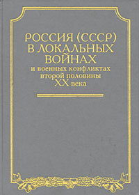

СССР в войнах второй половины XX века

Привлекая документы из многих государственных и ведомственных архивов (множество материалов впервые становятся доступными не только для служебного пользования), авторы впервые в отечественной литературе дают системный анализ участия советских и российских войск, военных советников и специалистов, а также использование оружия и боевой техники в локальных войнах и вооруженных конфликтах после второй мировой войны (1945-2000). Анализируется применение боевой техники и боевые действия в первой (1994-1996) и во второй чеченских компаниях (1999-2000).Для широкого круга читателей.
Содержание
Участие советских военнослужащих в вооруженных конфликтах в Азиатско-Тихоокеанском регионе (1946–1974 гг.) [15]
Советская военная помощь Китаю (1946–1950 гг.) [17]
Война в Корее (1950–1953 гг.) [84]
События на острове Даманский (март 1969 г.) [149]
Вооруженный пограничный конфликт в районе озера Жаланашколь (август 1969 г.) [176]
Борьба за независимость стран Индокитайского полуострова (1960–1975 г.) [189]
Национально-освободительная война народа Лаоса (1960–1975 гг.) [190]
Война во Вьетнаме (1961–1974 г.) [193]
Спасательная экспедиция советских военных моряков в Бангладеш (1972–1974 гг.) [212]
Роль СССР и его вооруженных сил в сохранении единства стран-участниц варшавского договора [217]
Венгерские события (1956 г.) [221]
Советская военная помощь странам африканского континента (1962–1979 гг.)
Советские войска в Чехословакии (1968 г.) [331]
Советская военная помощь Кубе в период Карибского кризиса (1962 г.) [359]
Разминирование территории Алжира (1962–1964 гг.) [395]
Вооруженная борьба народа Мозамбика за свободу и независимость (1965–1979 гг.) [403]
Ангола в борьбе за национальную независимость (1975–1979 гг.) [414]
Война на Африканском Роге. Боевые действия в Эфиопии (1977–1979 гг.) [438]
Военная помощь СССР странам Ближнего и Среднего востока. Участие контингента советских войск в арабо-израильских войнах (1956–1982 гг. [447]
Суэцкий кризис (1956 г.) [449]
Гражданская война в Северном Йемене (1962–1969 гг.) [455]
Вооруженные конфликты Египта с Израилем (1967–1974 гг.) [459]
Сирия в арабо-израильской войне (1982 г.) [476]
Нелегкие будни российских миротворцев [482]
Список сокращений [488]
Примечания
Размещено в «Библиотеке думающего о России ??? » - www.patriotica.ru
с сайта: «Военная литература»: militera.lib.ru
Издание: Коллектив авторов. СССР в войнах второй половины XX века — М.: Триада-фарм, 2002.
Книга на сайте: militera.lib.ru/h/20c2/index.html
Иллюстрации: нет
OCR: Андриянов П.М (assaur1@rambler.ru)
Правка: sdh (glh2003@rambler.ru)
Дополнительная обработка: Hoaxer (hoaxer@mail.ru)
[1] Так обозначены страницы. Номер страницы предшествует странице.
{1} Так помечены ссылки на примечания. Примечания в конце текста
Коллектив авторов. Россия (СССР) в войнах второй половины XX века [участие российских (советских) военнослужащих в боевых действиях за пределами Российской Федерации (СССР) после Второй мировой (1946–2002)] — М.: Триада-фарм, 2002. — 494с. Тираж 1.000 экз. (Государственная программа «Патриотическое воспитание граждан Российской Федерации на 2001–2005 годы». Институт Военной Истории Министерства Обороны Российской Федерации.)